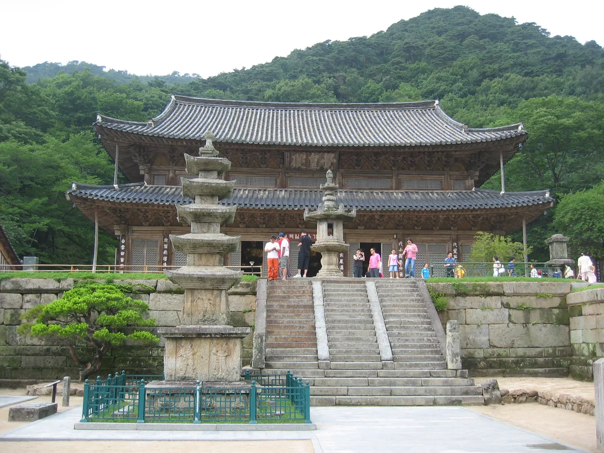
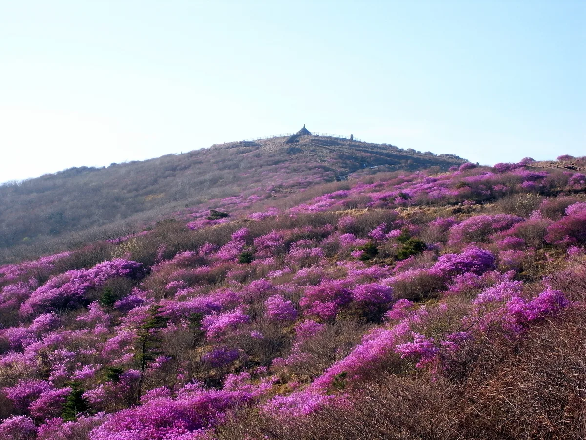
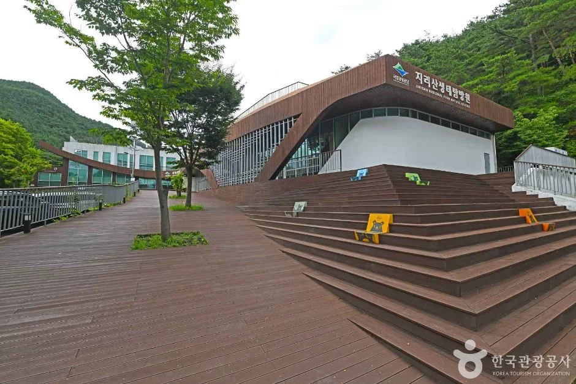

▲ 해발 1,000m가 넘는 성삼재. 표지석 뒤로 보이는 주차장이 노고단 탐방의 출발점이다 ⓒ 한국관광공사
지리산 노고단은 국립공원 탐방예약제가 적용되는 구간이다. 예약을 해야 정상에 오를 수 있지만, 탐방료 자체는 무료다. 대신 자차로 가는 사람에게는 다른 계산이 붙는다. 출발점인 성삼재 주차장이 시간제로 요금을 매기기 때문에, 산에 머무는 시간이 길어질수록 주차비가 함께 올라간다.
1. 예약 — 정상은 예약, 고개까지는 자유

▲ 노고단 탐방로. 노고단 고개까지는 예약 없이 갈 수 있고, 정상 구간부터 예약이 필요하다 ⓒ 한국관광공사
예약은 국립공원공단 예약시스템(reservation.knps.or.kr) 온라인 접수, 자동전화(1670-9202), 현장 접수 세 가지 방법으로 가능하다. 일일 정원은 1,870명이며, 예약 일정은 매월 1일과 15일 오전 10시에 향후 보름 치가 한꺼번에 열린다. 단풍철 주말처럼 수요가 몰리는 날짜를 노린다면 이 오픈 시각을 놓치지 않는 것이 관건이다.
중요한 것은 예약이 필요한 구간이 노고단 정상이라는 점이다. 국립공원 예약시스템이 명시하는 예약 대상 구간은 정확히 '노고단 고개 ~ 노고단 정상, 편도 500m(우회로 700m)'이다. 즉 성삼재에서 노고단 고개까지 올라가는 긴 구간은 예약 대상이 아니며, 마지막 500m만 예약이 걸려 있다. 정상을 밟을 계획이 아니라면 예약 없이도 대부분의 풍경을 볼 수 있다는 뜻이다.
예약제는 1월 1일부터 12월 31일까지 연중 운영되며, 겨울에만 열고 닫는 식이 아니다. 다만 결빙기에는 아이젠 착용이 필수 조건으로 안내된다.
국립공원 예약시스템에서 노고단 탐방 예약하기2. 주차비 — 머문 시간이 곧 요금이다
성삼재 주차장은 정액제가 아니라 시간에 비례해 요금이 붙는 구조다. 기준이 되는 것은 중·소형차의 첫 1시간 1,100원, 이후 10분마다 300원이며 하루 상한은 13,000원이다. 경차는 별도 요율이 있는 것이 아니라 이 기준 요금에서 50%를 감면받는다. 저공해차와 장애인·국가유공자 차량도 같은 50% 감면 대상이다.
| 구분 | 중·소형차 | 경차 등 50% 감면 | 대형버스 |
|---|---|---|---|
| 최초 1시간 | 1,100원 | 550원 | 2,000원 |
| 추가 10분마다 | 300원 | 150원 | 600원 |
| 1일 상한 | 13,000원 | 6,500원 | 20,000원 |
이 요율을 그대로 계산하면 실제 부담은 다음과 같다. 첫 1시간을 뺀 나머지를 10분 단위로 끊어 더하는 방식이다.
| 주차 시간 | 중·소형차 | 경차 등 50% 감면 |
|---|---|---|
| 2시간 | 2,900원 | 1,450원 |
| 4시간 | 6,500원 | 3,250원 |
| 6시간 | 10,100원 | 5,050원 |
| 7시간 40분 이상 | 13,000원(상한) | 6,500원(상한) |
표에서 보듯 중소형차로 6시간을 세우면 1만 원을 넘고, 7시간 40분을 넘기는 순간 계산상 13,100원이 되어 그때부터 일일 상한인 13,000원이 적용된다. 바꿔 말하면 7시간 40분 이후로는 아무리 오래 세워도 요금이 더 오르지 않는다. 노고단만 다녀오는 짧은 코스라면 부담이 크지 않지만, 반야봉이나 종주 구간까지 이어가는 장시간 산행이라면 주차비를 미리 계산에 넣어야 한다. 노선버스는 무료로 이용한다.
감면은 자동이 아니다 경차는 번호판으로 확인되지만, 저공해차 표지나 복지카드·국가유공자증으로 감면을 받는 경우에는 출차 시 증빙을 제시해야 한다. 산행 짐에 넣어 두면 정산기 앞에서 꺼내기 번거로우니 차 안에 두고 내리는 편이 낫다.
3. 거리와 시간 — 성삼재에서 4.7km

▲ 지리산 계곡. 성삼재에서 노고단 고개까지는 약 4.7km 구간이다 ⓒ CarPrism
성삼재에서 노고단 고개까지는 약 4.7km다. 여기에 노고단 고개에서 정상까지 편도 500m가 더해진다. 왕복과 휴식 시간을 감안하면 최소 서너 시간, 여유 있게 잡으면 대여섯 시간이 소요되는 일정이다. 앞의 주차 요금표와 함께 보면, 대부분의 방문자는 6,500원~1만 원대 구간에 걸린다고 보면 된다.
탐방 가능 시간은 오전 5시부터 오후 5시까지이며 입장 마감은 오후 4시다. 계절에 따라 달라지는 구간별 통제 시각이 아니라 연중 같은 기준으로 안내되고 있다. 성삼재 주차장 역시 05:00~17:00로 운영 시간이 같아, 주차장 문이 열리는 시각과 탐방 시작 시각이 사실상 붙어 있다. 오후 늦게 도착하면 입장 자체가 막히므로, 주차장에 도착하는 시각부터 역산해 일정을 짜야 한다.
4. 만차라면 — 화엄사에 세우고 버스로 오르는 방법

▲ 구례 화엄사. 성삼재가 만차일 때 차를 세우고 버스로 갈아탈 수 있는 지점이다 ⓒ Wikimedia Commons / eimoberg (CC BY 2.0)
성삼재 주차장은 규모가 넉넉한 편이 아니어서 주말·공휴일과 성수기에는 빠르게 찬다. 토요일 점심 무렵이면 이미 만차인 경우가 흔하고, 주말이라면 오전 7시 이전 도착이 현실적인 기준선으로 통한다. 문제는 성삼재가 왕복 산악도로 끝에 있다는 점이다. 올라가서 자리가 없으면 그 길을 그대로 되짚어 내려와야 한다.
대안은 산 아래에서 갈아타는 것이다. 구례공영버스터미널과 성삼재를 잇는 군내버스가 화엄사 주차장을 경유하므로, 화엄사에 차를 세우고 이 버스로 성삼재까지 올라가는 동선이 가능하다. 다만 편수가 하루 몇 편 수준으로 적고 평일과 주말 시간표가 다르므로, 막차 시각을 먼저 확인한 뒤 하산 시간을 정해야 한다. 편수를 놓치면 해발 1,100m에서 내려올 방법이 마땅치 않다.
구례군청에서 성삼재 방면 군내버스 시간표 확인5. 올라가는 길 — 해발 1,100m를 차로 오른다

▲ 상고대가 내린 지리산 능선(겨울 촬영). 고지대인 만큼 계절과 기상에 따라 도로 통제가 발생할 수 있다 ⓒ CarPrism
성삼재휴게소는 해발 1,102m로, 차로 닿을 수 있는 국내 지점 가운데 가장 높은 축에 든다. 진입 도로는 이른바 '지리산 관통도로'로 불린다. 원래 861번 지방도의 일부였는데, 2020년 11월 노선 변경으로 이 노고단로 구간이 861번 지방도에서 빠지면서 구례군 군도 12호선으로 전환됐다. 같은 개편에서 861번 지방도는 19번 국도를 거쳐 곡성군 고달면까지 25.2km가 새로 편입돼, 지금은 두 구간으로 끊어진 상태다.
도로 등급이 지방도에서 군도로 내려갔다는 것은 관리 주체가 전라남도에서 구례군으로 바뀌었다는 뜻이기도 하다. 운전자 입장에서 체감되는 부분은 통제 공지가 나오는 창구다. 고지대 산악도로인 만큼 안개나 결빙, 낙석, 폭설로 통제가 걸리는 일이 잦고 특히 겨울철 결빙 시에는 진입로 자체가 막힌다. 출발 전 국립공원 공지사항과 구례군 공지를 함께 확인해 두는 편이 안전하다.
6. 정리

▲ 능선 끝에 노고단 돌탑이 보이는 정상 구간(5월 철쭉 개화기 촬영). 예약이 필요한 것은 이 마지막 500m 구간이다 ⓒ Wikimedia Commons / Eggmoon (CC BY-SA 3.0)

▲ 지리산생태탐방원. 탐방 계획을 세울 때 참고할 수 있는 시설이다 ⓒ 한국관광공사
체크포인트
- 예약은 정상 구간만 필요하다. 정확히는 '노고단 고개~정상 편도 500m'이며, 고개까지는 예약 없이 갈 수 있다.
- 예약은 매월 1일·15일 오전 10시에 보름 치가 열린다. 인기 날짜는 이 시각을 노려야 한다.
- 탐방료는 무료지만 성삼재 주차비는 시간 비례다. 중소형 6시간 10,100원, 7시간 40분부터 상한 13,000원. 경차 등 감면 대상은 정확히 절반이다.
- 주말에는 오전 7시 전 도착이 아니면 만차를 각오해야 한다. 대안은 화엄사에 세우고 군내버스로 오르는 방법이다.
- 입장 마감은 오후 4시, 탐방로 운영은 오후 5시까지다.
- 고지대 산악도로이므로 기상에 따른 도로 통제 공지를 출발 전 확인해야 한다.